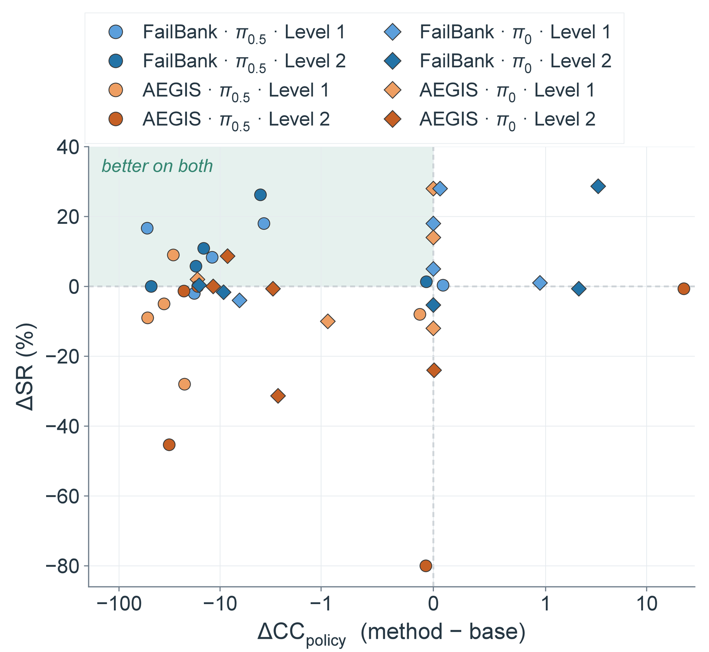
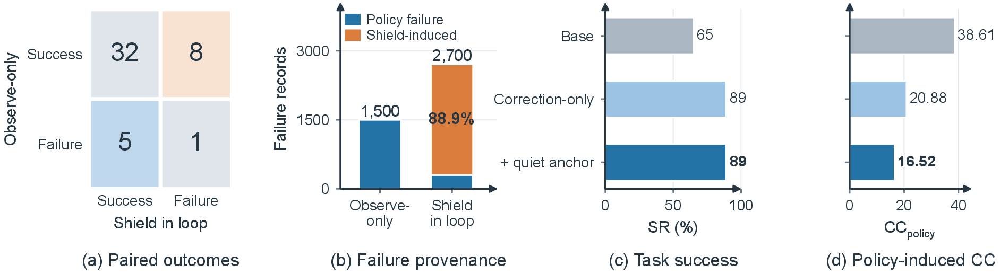
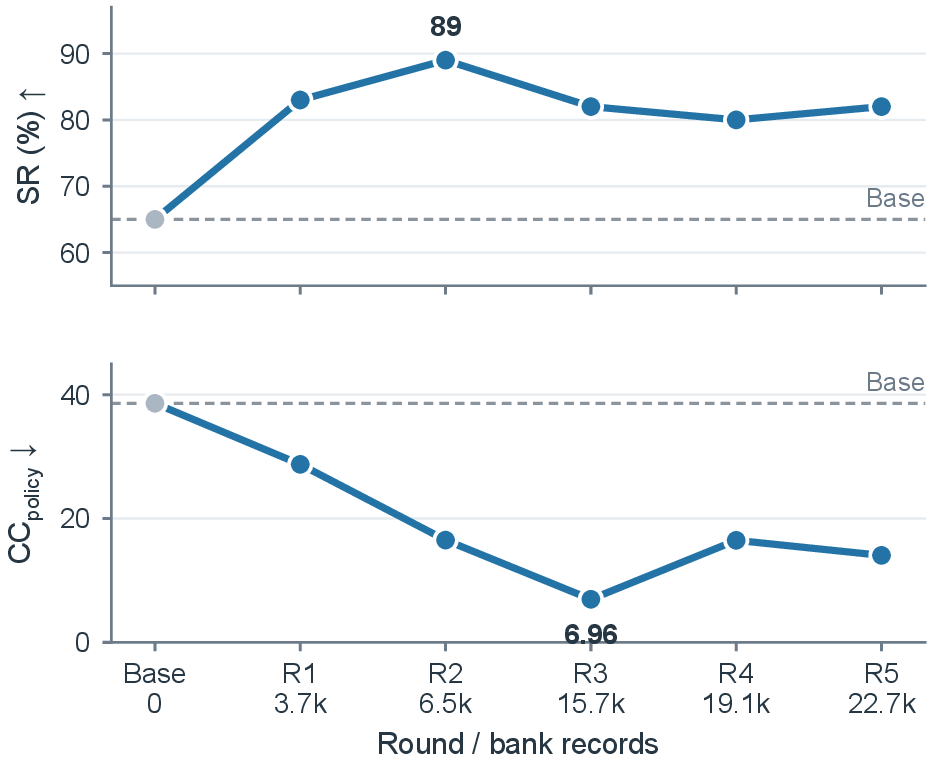

Abstract
Vision-language-action (VLA) models generalize broadly across robotic manipulation tasks, but complex environments require balancing task success with unintended contact. Runtime shields can correct individual actions, but they leave the underlying policy unchanged, so repeated disagreements may create a persistent policy–shield mismatch that blocks task progress. To address this challenge, we introduce FailBank, a four-stage self-evolving framework that converts runtime feedback into persistent policy improvement. During collection, a fixed CBF-based safety module serves as an observe-only teacher, producing counterfactual corrections while the policy remains in control. Outcome-aware admission then converts useful proposals into corrective targets and retains successful uncorrected actions as quiet anchors for guarded LoRA updates. We evaluate FailBank on the VLA-Arena benchmark across two difficulty levels and two VLA backbones. Compared with the base policies, FailBank improves the joint success–cost operating point. Across the two backbones, FailBank improves task success rate by 8.5 and 6.9 percentage points, while reducing policy-induced cumulative cost by 35.6% and 23.8%, respectively. Compared with runtime shielding, FailBank raises task success rate by 25.4 and 9.5 percentage points, while maintaining comparable policy-induced cumulative cost. These results show that runtime feedback can serve as persistent policy supervision rather than only as a temporary action constraint.
Method
The four-stage FailBank loop. Stage 1 collects policy-controlled rollouts while logging CBF proposals without altering execution. Stage 2 discards invalid records and filters valid records into CBF-triggered corrections and quiet anchors, assigning their targets and weights. Stage 3 accumulates the valid records in the training bank. Stage 4 fits a fresh LoRA adapter and accepts the candidate policy only if it passes the held-out guard. The accepted policy is then used to collect rollouts in the next round.
01Observe & label
The current policy controls the robot. An observe-only CBF teacher with privileged scene geometry proposes a corrected action ãt for every nominal action at and records whether it would have intervened. The environment always executes at, so collection stays on the policy's own state distribution.
02Admit & weight
After each rollout, triggered steps are scored by their observed consequences and become corrective targets with a weight. Records whose target would teach a harmful action, such as post-contact and emergency corrections, are dropped. Successful uncorrected actions can be kept as quiet anchors.
03Accumulate
Valid records are added to the failure bank rather than replacing it, so each round contributes failures that the previous policy made.
04Update with a held-out guard
A fresh LoRA adapter is fitted on the base policy with a record-weighted loss on the first action of each chunk. It is accepted only if held-out flow loss stays within 1.10× and first-action drift within 0.05 of the starting policy.
Main Results
(π0.5 / π0)
(π0.5 / π0)
(π0.5 / π0)
We evaluate on the VLA-Arena static-obstacle safety suite, five tasks at each of Levels 1 and 2, with the Arena-finetuned π0.5 and π0 checkpoints. Update data is collected only on the Level 1 Mango task. The other nine tasks, including all of Level 2, are unseen during collection. We compare against the base policy and AEGIS, a CBF runtime shield with GLM-4.5V perception, under matched initial states. SR is task success rate (%), CC is VLA-Arena's official cumulative cost, and CCpolicy removes cost already present in the initial state.
π0.5
π0
Best SR and CCpolicy in each row, and the best BRS, in bold. BRS is the base-relative score (base policy = 0.368).

Success–cost trade-off relative to the base policy. Circles and diamonds denote π0.5 and π0, blue and orange denote FailBank and AEGIS, and shade indicates difficulty level. Upward movement means higher success, and leftward movement means lower policy-induced cost, so the shaded upper-left quadrant is better on both. FailBank places more points in this joint-improvement region, while AEGIS more often moves left but downward.
Collection Interface and Learning Signals

Ablations of the collection interface and learning signals. (a) Paired episode outcomes under observe-only and shield-in-loop collection on the Level 1 mango task. Rows show observe-only outcomes, while columns show outcomes when shield corrections are executed. (b) Failure records produced on the same task by the two collection modes, separated by policy failures and shield-induced failures. (c–d) Comparison of Base, training on CBF-triggered records (Correction-only), and training with additional successful uncorrected actions (+ quiet anchor).
Executing the shield during collection changes the trajectory: on eight initial states the policy succeeds on its own but fails once the shield steers it, and these states account for 88.9% of the failure records in a shield-in-loop bank. Such records describe failures of the shielded system rather than of the policy, which is why FailBank keeps the teacher observe-only.
Accumulated Self-Evolution Rounds

Self-evolution across accumulated rounds on the Level 1 onion task. The failure bank grows from 3.7k records at R1 to 22.7k at R5. SR peaks at R2, whereas CCpolicy reaches its minimum at R3. Later rounds fluctuate while remaining improved over the base policy on both axes.
Code
The release contains all four stages, the held-out guard and the evaluation harness. It runs inside VLA-Arena's OpenPI environment with one small patch that adds a step seam to the evaluator. The core package reproduces FailBank without the AEGIS baseline or any VLM service. AEGIS is an optional extra. The CBF teacher is an interface, so other observe-only shields can be plugged in.
# VLA-Arena at the verified commit, plus the FailBank patch
git clone https://github.com/PKU-Alignment/VLA-Arena.git && cd VLA-Arena
git checkout 2ddcb00 && git apply ../FailBank/patches/vla-arena-2ddcb00.patch
# inside VLA-Arena's OpenPI environment
pip install -e ../FailBank
export FAILBANK_CHECKPOINTS=/path/to/checkpoints # Arena pi0.5 / pi0 finetunes
bash ../FailBank/examples/minimal/run_minimal.sh # collect, gate, one guarded update, evaluateLimitations
- The CBF teacher reads ground-truth hazard geometry from the simulator. It is a source of supervision in simulation, not a deployable shield.
- Only the VLA-Arena static-obstacle suite is evaluated; the other safety suites do not fit the obstacle model for structural reasons.
- Most of the success gain arrives in the first round; SR differences between adjacent rounds are not significant.
- The quiet-anchor gain at λq = 0.2 did not survive retraining (ten-task ΔSR −5.73, ΔCCpolicy +9.68).
- Evaluation cells are reproducible only on a fixed GPU model; every comparison pins its cells to one machine.
BibTeX
@article{cui2026failbank,
title = {Learning from Runtime Feedback through Failure-Bank Self-Evolution for Vision-Language-Action Models},
author = {Cui, Mingyue and Liu, Zheyuan and Zhu, Yihan and Zhang, Zheyuan and Jiang, Meng},
journal = {arXiv preprint},
year = {2026}
}